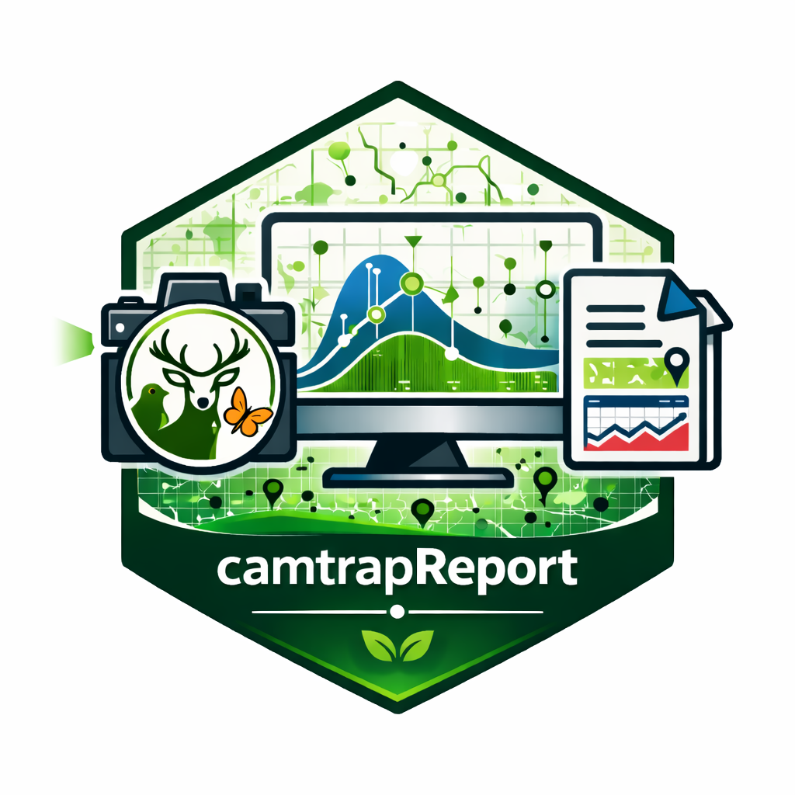

camtrapReport is an extensible R package for processing camera-trap data and automatically generating reproducible ecological reports. Designed for datasets formatted in, or converted to, the Camtrap-DP standard, it integrates data-quality diagnostics, summarisation, ecological analyses, visualisation, and report assembly within a single workflow.
Overview
Camera traps have become a key tool in wildlife monitoring and biodiversity research, providing continuous, non-invasive data on species occurrence, activity, and distribution. However, converting camera-trap data into clear, standardised, and reproducible outputs often requires multiple disconnected steps, from data checking and processing to analysis, visualisation, and reporting.
camtrapReport was developed to streamline this process by providing a modular framework for:
- importing and processing camera-trap datasets
- diagnosing and summarising data quality and sampling effort
- generating maps, tables, figures, and narrative report content
- supporting ecological analyses and visualisation
- assembling reproducible wildlife monitoring reports
By bringing these components together in a single package, camtrapReport helps researchers and practitioners transform raw camera-trap data into consistent ecological outputs for reporting, interpretation, and decision-making.